2016年，伊朗国宝级导演阿巴斯.基亚罗斯塔米去世。
《24帧》是他留下的最后一部作品。
对于这部作品他说：
我一直思索艺术家企图叙示一个场景现实的方式。
画家仅仅捕捉一个瞬间的现实景框，既不是在此前，也不是此后。
在《24帧》这件作品中，我决定使用我在这几年拍摄的照片，并为每个捕捉到的时刻，各想像出了长度为4分30秒包含这瞬间此前或此后的场景。
因此，全片114分钟，一共24个镜头，没有台词，鲜有人物，镜头也几乎静止不动。
电影浸透了阿巴斯对于这个世界的观察、思考和想象，作品颇具实验精神，更像是一部美术馆电影，看下来需要很大的耐性。
阿巴斯倾向于让观众参与到影片的创作中来，认为电影既属于导演也属于观众。
他反对所谓“完美电影”，反对在电影中绑架观众的情感，期待观众成为影片意义的创造者。
因此，观看本片你可以借着阿巴斯的眼睛展开自己的想象。
第一格
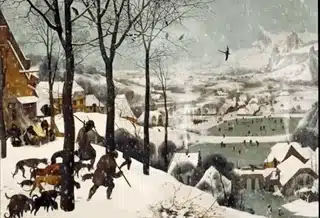
这幅画是老皮特尔·勃鲁盖尔1565年创作的《冬季猎人》，描述了一个庞杂庄严、神秘美丽的世界。
塔尔科夫斯基曾在《飞向太空》里用这幅画来表达人类的“思乡”之情，阿巴斯则利用CG技术让这幅画里的元素慢慢动了起来。
炊烟袅袅升起、雪花慢慢飘落、停在枝头上的乌鸦飞动，静止在画面中的人们开始劳作。
绘画变成照片，照片又动了起来，于是电影诞生了！
接下来的23个画面大多数是根据《冬季猎人》的元素延伸展开，电影让凝固的艺术《冬季猎人》变得越来越丰富和戏剧化。
第二格
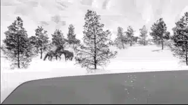
车子缓缓前进，透过车窗看到一匹马漫步在大雪纷飞中。
车子停了下来，车窗摇下一半形成了一个很有意思的画框，镜头定睛在雪地里的马。
在舒缓的车载音乐下，雪中双驹充满了生命的活力和姿态。
第三格
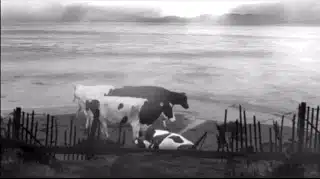
海边
潮起潮落、牛来牛往。
一头奶牛像死了一样一动不动地躺在海边。
渐渐地，我们才从奶牛的身上看到了呼吸。
他是受伤了么?
忽然，随着另一头奶牛的叫声，躺在海边的奶牛站了起来。
原来他在睡觉。
他刚起身，海边一个大浪打来，海水淹没了奶牛刚才躺卧的地方。
第四格
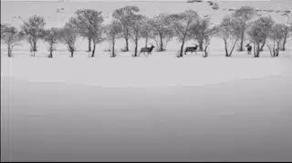
大雪纷飞，一群鸟停在远处的树梢上发着悦耳的鸟叫声。
大自然既安静又充满了生机。
忽然远处一声猎枪声打破了眼前的静谧，鸟儿四散，一群可爱的小鹿慌慌张张从左边闯入画面，又很快地逃向远方消失在画面中。
忽然一只小鹿停了下来，他踯躅不前、四处张望，随后逆鹿群而行，直至树林中只留下他一个。
他在想什么？
慢慢地，另一个小鹿走入画面，原来刚才的小鹿在等自己的朋友。
第五格
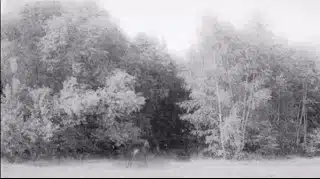
不知道是不是上一个镜头中的同一只小鹿。
他在草地上安静地吃着草，远处的树林在大风中摇曳，乌鸦在天空中啼叫。
慢慢地，大自然的声音逐渐过渡为一种令人紧张可怖的音效。
忽然一阵枪声，小鹿应声倒下！
第六格
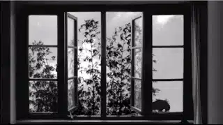
屋内响着舒缓动人的音乐。
窗外树枝摇曳于风中，似乎在随着音乐跳舞。
渐渐地，小鸟也加入到其中，整个画面让人无比陶醉。
值得一提的是，里面的意大利名曲《卡鲁索》背后有着一个感人至深的故事。
男高音卡鲁索即将走向死亡，在生命消逝之前，他不断想着自己深爱女孩的眼睛。
卡鲁索死后，Lucio Dalla听闻了这个故事，因此创作了这首歌献给深情的卡鲁索。
滑动查看完整歌词
在这个海洋闪耀的地方风呼呼地吹着在这个古老的阳台靠着所伦多海湾一个男人拥抱着一个女孩在泪水洗涤之后他清了清他的喉咙继续唱着这首歌： 我是多么爱你你知道，很爱很爱你；爱已经形成了一个枷锁你知道吗？血液在沸腾着...他看到了从海上闪耀的光芒想起了在美国的夜晚但是那光芒只是渔人的灯火及船尾白色的反光他感觉到音乐里包含的苦痛于是他离开了钢琴但是当他看到了月亮从乌云背后现身时即使死亡对他来说也是甜蜜的他看着那女孩的眼她的眼就像海一般的绿突然间泪水决堤他相信他霎时被淹没在泪水里
第七格
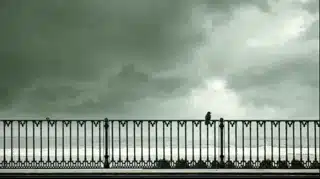
这是我最喜欢的一个场景。
阴沉天空下，一个孤独的小鸟望向苍茫的大海。
他不害怕暴风骤雨，也不害怕电闪雷鸣。
但却受不了形单影子的孤苦。
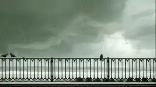
第八格
每个小鸟都有属于自己的树桩，他们站立其上看着潮来潮往。
人类的游艇呼啸而过，鸟儿不得不远离自己的根基。
但是没多久，一只鸟再次飞回到自己的树桩上。
每个人都会为一些事情坚持，在别人看来觉得浪费时间，但在他自己看来却觉得很重要。
原来鸟也是一样！
第九格
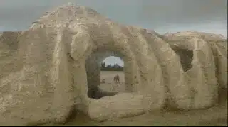
暴雨中，雄狮子和雌狮子紧紧拥抱在一起。
忽然一道闪电惊扰了他们的温暖。
原来在大自然中，个体的幸福也会被“外来之物”侵略。
第十格
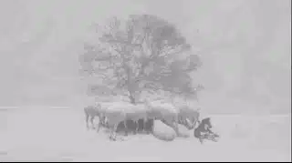
鹅毛般的大雪天。
一群羊躲在一棵树下抱团取暖，旁边的狗则独自忍受着寒冷和孤独。
忽然狼来了，狗立马冲上去将狼吓退。
原来幸福从来都不是免费的，总有人在为你付上代价。
第十一格
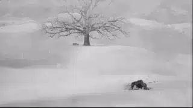
三只狼聚在一处，一只狼则孤独地躲在远处的树下。
三只狼并没有抛弃那只孤狼，他们两顾茅庐。
终于，四只狼聚在了一起。
第十二格
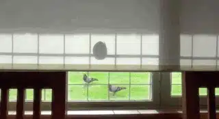
舒伯特的音乐下。
一只胖鸽子的影子投射在卷帘上。
它沐浴在暖暖的阳光下，静静地看着绿油油的草地和玩耍的小鸟。
这才是幸福吧。
第十三格
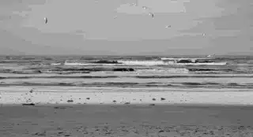
一群海鸥在空中自由的翱翔。
忽然一只海鸥被人用枪击落。
海鸥四散而逃，其中一只海鸥则守在同伴的尸体前发着啼哭般的叫声。
即使被海浪打湿自己的身体，海鸥依旧没有离开。
渐渐地，四散的海鸥都回到死去同伴的身边，他们似乎在一起唱着哀歌。
第十四格
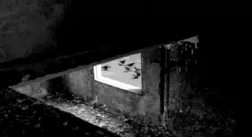
一个有趣的遮挡构图下，一群小鸟在马路边争食着地上的米粒。
忽然车轮压过，鸟儿四散，粮食也被巨大的卡车压住。
不知不觉中，人类已经倾吞了别人的生存空间。
第十五格
一排人一动不动地望向埃菲尔铁塔。
雪花飘落，人来人往，女人、婴儿、乐手经过，都没有引起他们的反应。
天空由昼转夜，埃菲尔铁塔上灯光闪闪，他们依旧一动不动。
或许，他们只是难辨真假的雕像。
亦或者，埃菲尔铁塔的宏伟让他们的时间处于静止之中。
第十六格
一只鸭子被遮网挡住了自由。
他很羡慕地看着其他鸭子自由地行走在海边，却没有办法越过阻拦。
终于，那边有一只鸭子注意到了这只可怜的鸭子。
他来到遮网前看着对方，他们注视了很久。
可那只鸭子还是离他而去走向海边。
没有自由的鸭子只能来回踱步，发着无奈而又凄凉的叫声。
第十七格
一只小鸟在雪堆里啄洞。
旁边一对乌鸦又玩又闹，小鸟却丝毫没有被影响。
他继续着自己小小的梦想，终于钻入洞中，消失在茫茫白雪里。
第十八格
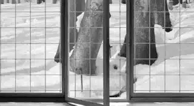
似乎小鸟对雪堆里的小洞有一种执念。
他们争着要躲入洞中。
一只鸟终于成功入主洞穴，却被小猫捕捉。
所幸，小鸟最终从小猫口中脱险。
没有想到逃出来后，他又飞入到小洞中。
这是一种怎样的执念啊！
第十九格
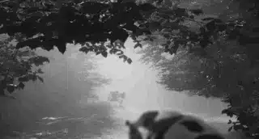
似乎又是海边那头得了懒癌的奶牛。
这次他站在镜头前一动也不动，镜头远处的另一头奶牛也一样静止不动。
很多牛从他们中间穿行而过，他们却纹丝不动。
忽然，远处的牛顺着牛群离开。
镜头前的奶牛才怅然若失地望向远处。
没错，他成了一头孤独的奶牛。
第二十格
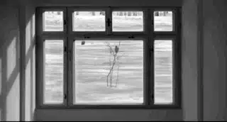
窗户将画面分割成大小不一的空间。
两只小鸟在其中游玩。
随着他们位置的变动，整个画面构图的变化也充满趣味和美感。
第二十一格
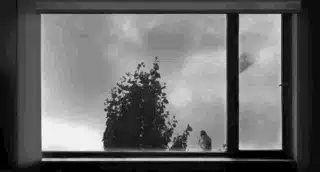
依旧是随风摇曳的树、停在窗前的鸟以及音乐。
所不同的是，音乐是孤独的，鸟是形单影只的，而树也是黑压压的一簇。
这就是布景、构图和音乐的魅力。
之前的树枝轻盈灵动，而这次的树则是画面当中黑压压的一片，就像是投在人心里的一片阴影，本身就是压抑和悲伤的。
第二十二格
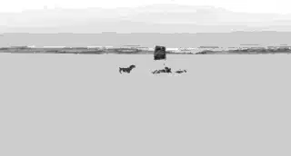
虚张声势的狗对着插在石头间的旗帜一阵乱叫，却始终不敢靠近。
风吹着旗帜有些许变化，狗都会被吓得跑的远远的。
那面旗帜很可怕么，敢乱吠，为什么不敢上去咬一下。
旗帜就是被海浪冲倒，小狗依旧远跑不敢靠近。
恐惧是奴役别人最好的手段！
第二十三格
一只小鸟站在一堆伐木上。
镜头远处是两株枯树以及不见其人只闻其声的电锯声。
很快，两棵枯树陆续被砍伐倒下，小鸟最终远飞。
只用一个镜头就呈现出人类对大自然的破坏以及小鸟无栖身之地的悲惨。
这个长镜头我给三十二个赞。
第二十四格
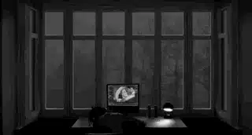
最后一个场景是一个伟大的谢幕。
一个女孩累爬在剪辑台前，窗外树影婆娑，电脑剪辑软件中，是逐格前进路易马勒的《黄金时代》。
就在女孩睡着的时候，她错过男女主人公相拥而吻的美妙时刻。
一曲咏叹风格的《Love Never Dies》，结束了电影。
阿巴斯对电影的热爱永不停歇。
就是你看本片看的睡着了，每秒24帧的奇迹依旧在发生。
你也可能是参与其中重要的风景。

这里没有挑逗你眼目情欲的小鲜肉
也没有挑动你肉体情欲的段子
更没有膨胀你今生骄傲的鸡血
我们只在乎那些最质朴真诚的作品
在那里我们才能恢复真正的想象力
我们也坚信这才是我们真正需要的

ID:Six_hundred_hits
长按二维码，一键关注
【六百击】
-END-
电影评论
尽情分享朋友圈

苹果打赏通道
小提示：文末广告是腾讯配送广告，内容与本号无关，但您的每次点击（无需反复点）都会给平台带来几毛收益，欢迎您点击支持六百击。